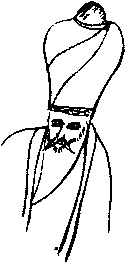

Tam iki hafta geçtiği halde, romanını bıraktığı yayınevinden hiç ses çıkmamıştı. Kalktı, gri, kalın çizgili, siyah takım elbisesini giydi. Lacivert ve üzerinde kocaman gri daireler olan meşinleşmiş kravatını özenerek bağladı. Gömleğinin kopuk yaka düğmesinden dolayı daima açık kalan yakasının kendisine bahşettiği sefil görünüşü biraz olsun hafifletmek için kravatı bir ilmek gibi iyice sıktı. Artık keskinliğini yitirmiş olan ve belki de ilk alındığı yıllarda da zaten bir şeye benzemeyen tıraş makinesiyle göstermelik bir tıraş oldu. Altı yedi santim kalınlığındaki kahverengi topukları ile gurur duyan, siyah, su çeken, zavallı, kalıbı bozulmuş ayakkabılarını giydi. Suratlarından düşenin bin parça olduğu yorgun insanlarla dolu, mavi beyaz çizgili bir halk otobüsüne, sonra Kadıköy-Sirkeci vapuruna binerek, söylenmesi bile hoş çağrışımlar yapan Avrupa yakasına geçti. Paraya kıydı, Cağaloğlu’nda kız lisesinin karşısındaki ara sokaklardan birinde olan yayınevine dolmuşla gitti.
Yakıt yokluğundan dolayı birkaç kat kazak ve hepsinin üstüne pembe bir hırka giyinmiş sekreter-çaycı kız, umursamaz bir tavırla, “Bilmem, ben kendilerini görmedim, belki gelmiştir, şu kapı” diye odayı gösterdi.
Çekinerek içeri girdi.
Editör İhsan Kırımçak Bey arkaya kaykılttığı tahta sandalyesini gıcırdatarak öne, sonra yine arkaya sallıyor, bulanık renkli, acayip şekerli bir çay içiyordu.
“Ne vardı?”
“Şey, ben o romanın yazarıyım efendim..."
“Yaa, aman efendim... aman... Niye baştan söylemediniz... O müthiş roman haa... Sayın yazar aşkolsun! Ne romanı kardeşim, adı yok mu bunun? Sen benimle dalga mı geçiyorsun?"
Kelimeler, düşük mutemet Osman Ferdi Bey’in yüzünde birer kırbaç gibi patladı.
“Efendim ne haddime. Yalnızca iki hafta kadar önce zât-t âlinize teslim etmiştim de...”
Ihsan Bey biraz önceki müstehzi halinden hafifçe utandı:
“Haa o roman... Vuslatın Demi Olmaz... Buyurun... Buyurun... Sayın Mürdüm... Bir an çıkaramadım... malum bu kadar roman, bu kadar başvuru arasında...”
Bomboş, kahverengi formika kaplı rafları gösterdi. Birinden bir gazete parçası sarkıyor, birkaç gün önceki Cesur Matana katliamı ile ilgili bir başlığın yarısı okunuyordu. Kalanını Osman Ferdi zihninden tamamladı.
“...Fena bir roman değil aslında... Pek fahiş bir iki maddi hata, mesela Ayasofya minarelerini üç şerefeli yapmanız gibi, düzeltilirse olabilir... Tabii, asıl önemli olan üslup ve mantık. Bizim Naci Paşa’nın Leninci Şeyh adlı kitabının tadında ve kıvamında bir iki pasaj var... Ama sizinki daha ziyade bir tür tarihi avantür olmuş... Ferhat Kafdağlı ile Emrullah Namık Tanrıkulu’nun romanları gibi... Yani bir iki de o tip sahne var... Daha doğrusu o tip sahne adayı var. Mesela, Osman Hulûsi ile Mehlika Sultan... Bu arada, biliyorsunuz İhya İkmal’in gerçekte kime âşık olarak yazdığını o şiiri, hani ünlü şairimizin annesine..."
Osman Ferdi saygısızlık etmek istemiyordu ama sordu:
"Hangi şiiri, o Hilal-Haç Ovası pasajındaki mi?... Ben orada Mehlika’yı hiç kast..." İhsan Kırımçak gülerek sözünü kesti:
“Yapmayın Sayın Mürdüm, herhalde onu söylemiyoruz...”
“Beyefendi lütfen, beğenmediyseniz söyleyin doğrudan...”
“Asıl siz yapmayın, romanınızdaki kurgu oyunlarından biri değil bu... Siz bu şiirini bilmiyor musunuz İhya İkmal’in?”
“Efendim, pekâlâ bildiğiniz gibi ben orada Hayati Kâmil Bey'in meşhur şiirine bir gönderide bulunmuştum...”
“Neyse ha İkmal ha Kâmil... Lafı dağıtmayalım! Mesela bu sahneye bir iki dokunursanız... Hani, ‘Mehlika Sultan’ın ince narin elleri Osman Hulûsi’nin demirci körüğü gibi inip kalkan geniş ve inançlı göğsünün kılları arasında dolaşıyordu’ türünden bir şeyler... İş yapma ihtimali olabilir. Bir de zaten mevcut fakat gizil olan halkçı mesajın biraz daha öne çekilmesi gerek... Yani ben anladım da halk anlamaz, o yüzden yanlış anlamayın. Mesela müteferrikaların tasfiye edilmesi sahnesi... Orada halk, ya umursamaz ya hafif onaylıyor şeklinde tasvir edilmiş. Efendim biz hangi dünyada yaşıyoruz? Biraz cesur olalım lütfen... ‘Anadolu’nun ezilen kitleleri, İstanbul’daki işbirlikçi komprador paşaların şımarık çocuklarının tasfiye edilmesini devrim adına gurur ve umutla selamladılar!...’ Nasıl?”
Osman Ferdi odadan kaçmak istedi ama bu roman son umuduydu. Annesinden kalan iki bileziği bozdurarak bir daktilo almış, yememiş içmemiş, parayı kâğıt ve şeride yatırmış, bunu yazmıştı. Başvurduğu üçüncü yayıneviydi bu ve hiç olmazsa İhsan Bey romanı okumuştu...
Bir önceki yayınevi, kitabın adını biraz değiştirerek “Vuslat Beni Islat” şeklinde Kırmızı Noktalı Dizi’den bastırmayı önermişti. Osman Ferdi “hayır” demişti ama bu isimle başka bir romanı hemen o hafta sonu yayınlamıştı yayınevi... Fena da iş yapmıyordu. Şimdilik sırıtmakla yetindi. İhsan Bey devam etti,
“Yanlız (sic) okur romanda yazarı görmek ister. Dolayısıyla ya Suat Ferid’i ya da Osman Hulûsi’yi biraz kendinize benzetmeniz lazım. Siz bir ustalık yapıp kendinizi ikiye bölmüşsünüz, ama olmaz! Kalem adı olarak Osman Ferdi’yi alıp, gerçek adınızı romanda kullanmak ise pek parlak bir fikir, destekliyorum Bir gün nüfustaki adınızın, romanın bellibaşlı iki karakteri veya birincisiyle aynı olduğu anlaşılınca satış patlar. Şöyle bir şey nasıl: ‘Malmüdürlüğü tahrirat kalemi beyaz yakalı proletaryasından Osman Hulûsi Gördüm, bir gün, gelen evrak kaydı üç yüz yıldır yapılmayan bir tomar kâğıt buluyor.’ İyi mi? Bu Osman Hulûsi aynen sizin gibi bir zat. Kısa boylu, zayıf, yanakları çökmüş, ayakkabıları su alıyor. Biraz gerçekçi olalım lütfen. En azından şahsiyetinizin yarısının boyunu 1.94, saçlarını kahverengi, sakallarını kızıl tarif etmişsiniz ve her şey yirmi küsur yıl sonra İstanbul’da, Ulus’ta, Allah’ın dağında geçiyor. Sizi gören bunlara inanır mı? Ne inandırıcılığı kalıyor romanın?”
Osman Ferdi mecalsiz bir protestoya kalkıştı:
“Ama efendim, bu bir roman... Ben oturdum bunları uydurdum. İnsanlar inansın istemiyorum ki!"
İhsan Kırımçak bilmiş bilmiş gülümsedi:
“Hadi hadi... ilk kez mi roman okuyoruz? Sizinkisi bir alegorik çalışma olmuş. Berke tipiniz özellikle başarılı. Okuyan herkes, devlette ve hükümette henüz resmi bir sıfatı olmayan başbakandan bahsettiğinizi anlar. Anagramınız zekice ama tamamen çözülemez de değil. Harflerin biraz yerini değiştirin, hoop... Berke oluyor Ekber... Ekber Recil İltutmuş... İyi olmuş, kurtlu sakallı bir gerici olarak tasvir etmişsiniz... Doğal olarak, redaksiyondan sonra bu sakal siyah olmalı. Diğer gerici tiplemelerde olduğu gibi... Böcekli Manav’daki mahalle imamını hatırladınız değil mi? Hah, işte onun gibi... Üstelik diliniz biraz ağır. Bu Osmanlıcaların hepsinin değişmesi gerek. Neyse ki onun için yorulmanıza gerek yok. Lem... yani sadeleştirme kadromuz bu işi halleder... Yalnış (sic) anlaşılan bir roman demektir ki hiç anlaşılmamış! Kitlelerin bunu anlaması gerekir... Roman mesajını açıklıkla vermeli. Romancı işe karışmalı, müdahil olmalı, insanlara kim olduklarını ve nasıl olmaları gerektiğini tam olarak veremezse ne anlamı kalır roman yazmanın... ve hatta okumanın? Kim okur tamamen yararsız uyduruk bir romanı?”
Osman Ferdi bir açık yakalamıştı. Biraz eğlenceyi kendine çok görmedi:
“Ihsan Bey, niye Berke gerici bir tip olsun da yaptığı bir şey, müteferrikaların tasfiyesi, ilerici olsun? Bu size tuhaf gelmiyor mu?"
Patlamalı bir cevap alili:
“Bakın hemen havaya girdiniz, tutarsızlıkları siz de görmeye başladınız. Bravo! Bunu, okurken ben de düşündüm. ‘Yav nasıl oluyor da Berke, yani Ekber gibi bir saltanat taraftarı, asla halkçı veya demokratik olmayan bir adam, müteferrikalar gibi bu milletin kanını emen sülükleri tasfiye edebiliyor?’ diye sordum kendime... Cevabım, yönetici sınıftaki sınıf içi çatışmalar oldu. Yani Berke bu müteferrikaların... haa bunların adını da bundan sonra ‘ayrılmışlar’ olarak Türkçemize kazandırmalısınız, işte bu ayrılmışların kendine de bir tehdit olduğunu anlayınca sınıf olarak ortadan kaldırmaya karar veriyor hepsini. Bunu tek başına yapamayacağına göre de mec... zorunlu olarak halka gidiyor..."
"Halka mı gidiyor? Bunu da nereden çıkardınız? En ufak bir imada bile bulunmadım, kimin yardımı ile bu katliam... şey, yani hayırlı tasfiyeyi yaptığını..."
Ihsan Bey güldü:
"Bakın bir saattir beyninizin kıvrımlarında saklı kalmış şeyleri okuyorum, siz hâlâ bana, bütün romanın yapısını-çatısını sökmüş bir aydına, kurnazlıklar yapma peşindesiniz. Sultan bunları tek tek, elleriyle darağacına çıkarmadı ya! Tabii ki yardımcıları olacak. Bunların da ‘ayrılmışlar’ ile taban tabana zıt bir sosyal sınıftan gelmeleri gayet mantıklı bir şey. Dolayısıyla farkına anca vardığınız bu çelişkiyi ortadan kaldırmak için Berke’yi bir halk düşmanı, bir despot olarak göstermek zorundasınız ki zaten öyle yapıyorsunuz, yani buraya kadar hiç fena değilsiniz, tabii zulme uğrayanların da ayrılmış tayfasından olmaması gerekiyor, onları ila halk çocuğu olarak göstermek zorundasınız. Mesela sarayda odun kesen zülüflü, zülüf saç demektir, baltacıları sultan katliama uğratsın, çelişki de çözülsün, nasıl?"
“Ah harika! Bunları ben niye tek başıma düşünemiyorum? Böylece o Anadolu halkının, sarayın lüzumsuz bir katliamını selamlamaları faslı da sayenizde ortadan kalkar” dedi Osman Ferdi alayla.
“Uuu, işin o kısım da var... yok... yok. Onu tutalım. Ama o zaman da halk niye baltacıların ortadan kalktığına sevinsin? Bu da bir acayip. Belki Berke’yi zengin ama iyi bir karakter, bir potansiyel işçi olarak kurgulasanız? Hani okuyucuyu taa en başlardan alıştırsanız, mesela Berke haftada iki gün kılık değiştirerek bostanlarda çalışıyor olur, sonra da tamamıyla bir tarım işçisine dönüşür. Zaten de sultan değilmiş, çünkü tarihi fantezi yazıyorsunuz ve herhangi bir kayıtla bağlı değilsiniz, meğer taya kadının, bakın bizde neler var, neleri biliyoruz, oğlu imiş te karışmış... Asıl sultan... eee şey... O sultanın kayığına ateş açan ayrılmış kimdi, hah, Sarı Hamza, o olsun. Bu, o mütel... yani ayrılmışın motivasyonunu da açıklar... Çünkü buna özellikle dikkat etlim, sizde hiçbir neden yok! Burasını meskût geçmişsiniz... Haa, meskût dedim de aklıma geldi, niye her seferinde bir yeniçerinin hiç sesi çıkmıyor, hu-mu çekerken?”
Osman Ferdi büyük bir ciddiyetle,
"Efendim, o yeniçeri küp gibi sağır, kimseyi duymuyor ki cevap versin" dedi.
“Harika, harika! Bazen gerçekten iyi mesajlar da verdiğiniz oluyor... Sağırı tutmuş yeniçeri yapmışlar... Ocağın nizamı bozulmuş... Küçük bir örnek... Bravo!"
“Peki Hwace Efendi?" diye sordu arsızca, Osman f erdi.
“Haa, eee... Romanın en olumlu karakterlerinden biri, bir örnek aydın olarak kalıyor herhalde. 1967 Anayasasının en büyük mimarını dışarıda bırakacak değiliz, değiştirmek de haddimiz değil. Yanlız, kendisinin kimliğini koruma gayretleriniz pek aşırı olmuş, Hwace gibi lüzumsuz bu ad vermişsiniz, bizim elimizdeki insan malzemesinin bu edebi oyunu anlayacak kapasiteden uzak olduklarım unutmayalım... Yani sırf unvanını değiştirip Profesör derseniz iş hallolur, hem herkes anlar hem siz mesajınızı daha iyi verirsiniz. Hami karakterini ise hiç sevmedim. Çok kararsız; bir despotizmden yana bir halktan yana, goşist midir fetişist midir belli değil... En iyisi onu tamamen çıkarmak. Çıkmasıyla romanda esaslı bir değişiklik de olmaz zaten.”
Osman f erdi başparmak tarafları yırtık ve ıslak çoraplarının verdiği huzursuzluk duygusunu bir yana iteleyerek hafif tertip eğlenmeye başlamıştı:
“Ya Mehlika?”
“Kalsın... kalsın... Fakat o boğa güreşi sahnesini, o İberya imgelemini hiç, ama hiç anlamadım... Düşünün, ben anlamıyorsam halk nasıl... haa... zaten en başlarda Suat Ferid’e yamadığınız o papaz imgesi de pek aykırı duruyor orada... Biz Katolik miyiz? Ne kara dulu?”
Osman Ferdi gerçek bir merakla sordu:
"Eee, peki ne yapalım orada?”
“Efendim şöyle bizim kültürümüze uygun bir şey, mesela... mesela... Hah! Elektrikler kesilince karısını baldızı zannederek öpen birinin ışıklar gelince içine düştüğü utanç verici durum... Bir tek kendisi bildiği için daha çok utanıyor... Nasıl? Mehlika’ya gelince... Biraz daha cüretkâr olun canım! Mesela harem veya hamamda bir yemeli-içmeli oyun sahnesi olsun... Cariyelere örnek olsun diye Mehlika kıvrak bir göbek atsın... Malum, Harem aynı zamanda bir okuldu... Ayrıca Osman yerine Hwace’ye âşık olsun... Üstelik Suat Ferid’in Berke olması ihtimalini de açık tutuyorsunuz... boy, kilo... Bunlar Türk okurunun dikkatinden kaçmaz yani... töbe...töbe... (sic) Eğer Mehlika da Annette ise... olmaz... Siz onu en iyisi Bizanslı bir cariye yapın... Beraber eğitim görüyorlar... Ama kardeş değiller. Nasıl? Ama küçük bir ihtimal de olsa Annette’in hakikaten Belçikalı olması mümkün... O zaman dostum, siz de bana bir şey söyleyin: Şu tek ‘n’ ile yazmakta ısrar edip durduğunuz Annette kim? Çok kıvrandım, böyle bir karakter bulamadım gerçek hayatta!”
Osman Ferdi’nin intikam anı gelmişti. Kitabının piç olarak basılmasının bir bedeli olacaktı ve bunu da İhsan Kırımçak gıdım gıdım ödeyecekti. Evet, kitap basılacaktı, başka hiçbir çaresi yoktu. Hemen ayağa kalktı, kapıyı sıkıca kapadı. Sonra bir semah tutturdu.
Kırımçak “benden zaten saklayamazdın... Senin şeyh olduğunu ve otobiyografik bir şey yazdığım nasıl da anladım...” pozunda, gülümseyerek bakıyordu. Sonra Osman Ferdi baş kesip, gözlerini yerden kaldırmadan cevap verdi.
Sana senden yakındır Anet
Sen onu al da kendine bir can et
Gerektir mekân pek sıcak ola
Anet kızımız soğan gibi soyula
Sonra Ihsan Kırımçak’ın taa içine işleyen ve tir tir titremesine yol açan bir bakışla yüzüne baktı:
“Gerisi sizin gibi bir edebiyat dâhisi için çocuk oyuncağı...”
Bir miktar avans aldı sekreter kızdan. Onun da yüzüne uzun uzun baktı:
“Biz sizinle Belçika’da filan tanışmamıştık, değil mi? Aaa, yok yok... Belçikalı bir tanıdığım var da ona benzettim, pardon.” Kıza bir nevi gurur gelmişti. Osman Ferdi Allahaısmarladık diyerek, geri aldığı metnin kenarlarına kırmızı kaim ispirtolu kalemle müstehcen kıvrımlar şeklinde not olarak düşülmüş değişiklikleri yapmaya yollandı.
İhsan Kırımçak, ortalıkta mevcut tek cins-i latif olan sekreterine zaten hafif tertip yazılmıştı. Kız gözüne, özellikle, çaydanlığı sobanın üzerine koyarak hazırladığı sıcak suyla saçlarını yıkayıp kabarttığı cuma günleri pek sevimli görünürdü. Yine öyle bir cuma, Şeyh Osman’ın, zihnînin bir kıyıcığına itelediği sözleri İhsan’ın yanaklarına şamarlar gibi indi. Evet, bu Allah’ın cezası yerde kaloriferler çalışmadığı için küfrettiği günlere küfretti. Ne büyük nimettir insanın ısıyı kendisinin ayarlaması! Hemen dışarı fırladı. İki sokak aşağıdan dört adet elektrikli ısıtıcıyı kaptığı gibi geri döndü. Kendi odasında duran ve ancak kapının açık tutulması ile Anet’i –yani kendisinin Anet’i başkalarının Leman’ı– birazcık ısıtabilen ısıtıcıya destek gerekti. Zavallı kızın kat kat giyinmesine kendisi sebep olmuş, bu nadide çiçeğin dünyanın ve kendisinin gözlerinden saklanmasına yol açmıştı. “Nezle miyim, neyim yav... Senin taraftan soğuk geliyor kızım, pek üşüdüm" ayağına üç tane ısıtıcıyı kızın yanına yöresine koydu, birini de kendi odasına. Yarım saat sonra Leman’ın elde örülmüş orlon turuncu hırkasını çıkarmasını, şeyhin bir kerameti gibi müşahede etti. Birkaç saat sonra diğerleri de bunu takip etti. Kız hakikaten de kat kat kazaklarını soğan kabuklarıymış gibi çıkardı.
Böylece başlayan iklimsel yakınlaşmayı bir miktar ıvır-zıvır konuşma takip etti ve İhsan Kırımçak daha o gün, kızın kendisini enikonu Belçikalı zannettiğini anladı:
“Hiç sormamıştım Leman Hanım, aslen nerelisiniz?”
“Trakyalıyız, Eskikabak’tan... Ama galiba bir Belçika bağlantımız olsa gerek ki herkes beni küçüklüğümden beri Belçikalı zanneder...”
Bu cevap Sayın Kırımçak’ı bir er sillesi yemişçesine sarsmıştı.